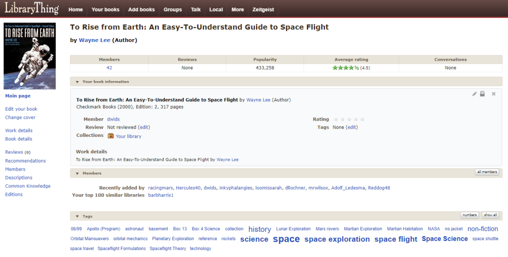
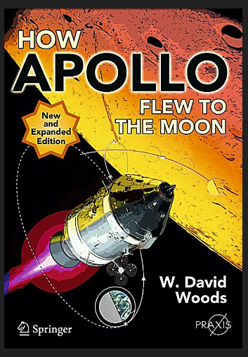
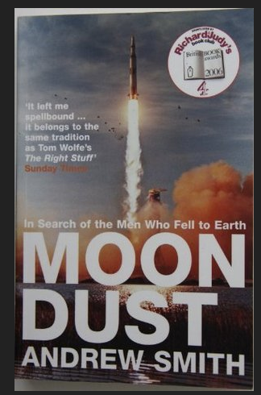

One of the benefits of cataloguing all my books in the free Library Thing system, is I can quickly find all the books on a given topic (tag). And I don’t even have to add the tags; they are automatically sourced from other users and websites. I just scan the book’s barcode in – via the phone’s camera – and this magically is added to my catalogue:

All this from one quick barcode scan Of course older books don’t have barcodes, but it’s quite easy to search by ISBN or even title/author. If all else fails, you can just add your own data.I should add that a ‘book’ can be a DVD, eBook, Magazine, Game or whatever you want. Yes, you can add your own ‘media types’.
Anyway, a quick list of my recommended Spaceflight–related books. These are the ones I currently own, not including the other’s I’ve borrowed or even got rid of (unlikely!). These aren’t astronomy books; the focus is on people and craft in space.
How Apollo Flew to the Moon
Author: W. David Woods

Let’s start with one of the best. David has worked on assorted NASA-related documentation projects over the years (including the excellent Apollo Surface Journal).
This user review sums it up for me: “If you are a space buff this is the book for you. Like an episode of “How it’s Made,” this book confines itself to providing a technical, but not overly complicated explanation of how Apollo got to the moon and back. Distilling the thousands of moving parts that comprised the Apollo program into a very well written one volume description, the author takes such concepts as gravity, orbital dynamics, weightlessness, and computer theory, and explains them as they applied to Apollo in a way even the non-scientifically inclined can get their brains around.”
Whilst I don’t know David, we have had an enjoyable email exchange about a possible little project we could work on.
To Rise from Earth: An Easy-To-Understand Guide to Space Flight
Author: Wayne Lee
“Offers a math-free, color tour of the universe of rockets, orbital mechanics, the space shuttle, and landmark and current races to the moon, Mars, and beyond.” From 2000 (hence space shuttle), but the bits I focused on – orbital mechanics – haven’t changed.
Really clear explanations and diagrams of the ‘illogical’ ways a rocket has to point and fire in space to change orbit etc.
For example: Say you are in a nice stable orbit and you need to catch up with the International Space Station 100km in front of you – and on the same orbit. So, like the Gemini mission did in the mid 60’s, you just point your craft at the target and fire your rear engine. That’s what Luke Starkiller would do. Or George in “Gravity”.
Alas you’ll watch the ISS appear to drop lower and accelerate away….
Moondust: In Search of the Men Who Fell to Earth
Author: Andrew Smith

The Amazon review of this 2005 book reads: “The Apollo lunar missions of the 1960s and 1970s have been called the last optimistic acts of the twentieth century. Twelve astronauts made this greatest of all journeys and were indelibly marked by it, for better or for worse. Journalist Andrew Smith tracks down the nine surviving members of this elite group to find their answers to the question “Where do you go after you’ve been to the Moon?”
Obviously the Apollo astronauts had different personality types. But it was interesting – and a bit sad – to read of their apparent clashes and on-going feuds. It’s only a minor part of the book, so don’t let it put you off.
Others
To be honest, these are on the To-Read list. Unless stated, the quick summaries are from Amazon. Not recommendations as I haven’t read them. Derr.
Digital Apollo: Human and Machine in Spaceflight
Author: David A. Mindell. “…engineer-historian David Mindell takes this famous moment as a starting point for an exploration of the relationship between humans and computers in the Apollo program.
Digital Apollo examines the design and execution of each of the six Apollo moon landings, drawing on transcripts and data telemetry from the flights, astronaut interviews, and NASA’s extensive archives. Mindell’s exploration of how human pilots and automated systems worked together to achieve the ultimate in flight – a lunar landing – traces and reframes the debate over the future of humans and automation in space…”
Gemini – Steps to the Moon
Author: David J. Shayler. “…tells the story of the origin and development of the programme and the spacecraft from the perspective of the engineers, flight controllers and astronauts involved. It includes chapters on flight tests, Extra Vehicular Activity (EVA), rendezvous and docking, as well as information from NASA archives and personal interviews.”
First Man: The Life of Neil Armstrong
Author: James Hansen. Got this (updated) edition after sitting through the very disappointing film First Man.
I have a few others, but that will do.
Original Published Date : 2020-04-20